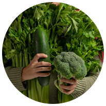
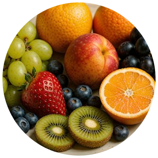
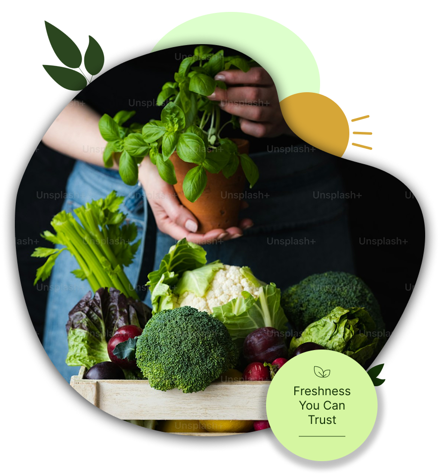

01 — Fresh Fruits
Farm-fresh goodness for
everyday meals.
FRESH • NATURAL • LOCAL
Farm-fresh fruits and vegetables, carefully selected for
quality, freshness, and a healthier everyday life.



WHY J.J ORGANICS
J.J Organics brings quality organic food closer to your
everyday life — carefully selected products for fresh,
healthy and natural choices.
Carefully selected products for your everyday needs.
We focus on quality and freshness in every product.
A range of natural and organic food options.
Making better food choices simple and enjoyable.
FRESH FROM NATURE
Discover fresh, natural and carefully selected produce
for every meal and every lifestyle.
Farm-fresh goodness for
everyday meals.
Farm-fresh goodness for
everyday meals.
Fresh greens packed with
natural goodness.
Fragrant, fresh and full of
natural flavour
OUR PROMISE
At J.J Organics, we believe freshness, quality and
thoughtful choices can make everyday living better.
Fresh choices for everyday meals.
Carefully selected with quality in mind.
Simple choices inspired by nature.
Make every meal a little fresher, a little healthier, and a lot more enjoyable.